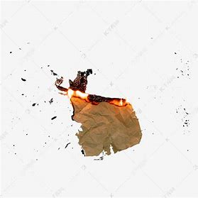

德艺双馨，汉语成语，拼音是dé yì shuāng xīn，意思是形容一个人的德行和艺术（技艺）都具有良好的声誉。一般指从事艺术的人。出自《国语·周语》。
明德惟馨（拼音：míng dé wéi xīn）是一个成语，最早出自于西周《尚书·君陈》。 明德惟馨（明德：美德；惟：是；馨：散发的香气）指真正能够发出香气的是美德。含褒义；在句中一般作谓语、宾语。
飞鸽传书，读音：fei ge chuan shu，汉语成语，释义：与“鸿雁传书”是相同的意思，是古人之间联系的一种方式，将信件系在鸽子的脚上，然后传递给要传递的人。
指在阅读完纸张上的信息后立刻烧毁纸张
